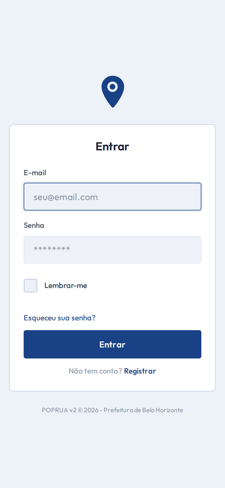

Contexto e propósito
Visão geral
Contexto e propósito
Integração entre CRAS e Zeladoria Urbana para monitorar a população em situação de rua em Belo Horizonte.
O que resolve
- Registro estruturado de ações de campo
- Georreferenciamento de pontos
- Rastreamento de pessoas
- Relatórios administrativos
Quem usa
- Agentes, GCM e SLU
- Supervisores e coordenadores
- Gestores GINFI
- Administradores
/login

Acesso autenticado com perfis e permissões